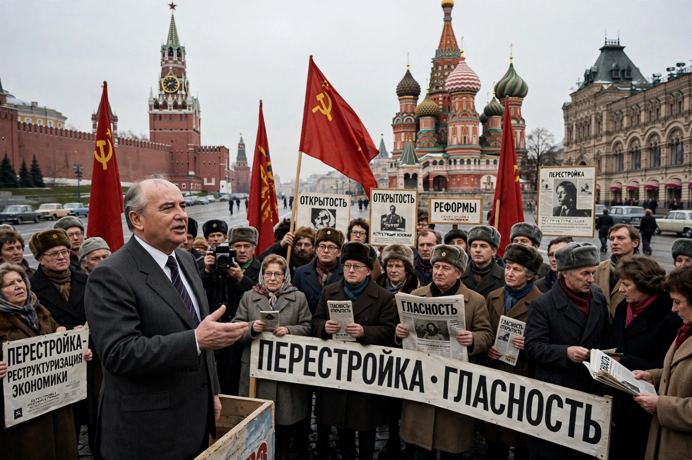

Perestroika (Russian: перестройка, "restructuring") was a political and economic reform movement in the Soviet Union in the 1980s, launched by leader Mikhail Gorbachev, that ultimately contributed to the end of the Cold War and the dissolution of the USSR in 1991.

Perestroika sought to revitalize a stagnant economy by introducing market-like elements: the 1987 Law on State Enterprise, legal cooperatives, joint ventures with foreign firms, and reduced central planning, alongside political reforms — contested elections, the Congress of People's Deputies, and glasnost's freer media.
Partial reform disrupted the command economy without replacing it, causing shortages and inflation, while political liberalization unleashed nationalist movements in the Baltic states, Caucasus and Ukraine. After the failed August 1991 coup, the Soviet Union dissolved that December. Historians debate whether perestroika failed by design or was overtaken by events.